Project Type
Professional
Timeline
Sep 2023
Team
1 Engineer
Product Designer (Me)
Tools
Figma
ChatGPT
What I did
- Led end-to-end design of an AI-powered coffee chat feature.
- Identified social friction through qualitative research and internal testing.
- Designed transparent pairing logic that explains why users are matched.
- Simplified scheduling to reduce coordination effort and cognitive load.
- Partnered closely with engineering to iterate on the MVP.
Overview
Bridging the gap between structured meetings and casual interactions
Litespace is an AI-powered enterprise platform that helps organizations improve engagement and satisfaction in hybrid and remote workplaces. Coffee Chat is an enterprise 0-to-1 solution designed to spark spontaneous, meaningful conversations across distributed teams. It turns routine meetings into casual yet purposeful interactions that strengthen culture.
Impact
Driving engagement and adoption across hybrid teams
Users opted into Coffee Chat within the first month, signaling strong early adoption
Chats generated in the first month through auto-matched pairings
Company valuation reached alongside the Coffee Chat launch and other key feature rollouts
Problem
Remote teams lack casual social interactions
To improve team connection in hybrid and remote environments, I identified key challenges through observations, customer feedback, and teammate interviews.
Lack of Spontaneous Interactions
In hybrid and remote environments, opportunities for spontaneous, meaningful conversations are limited, leading to reduced team cohesion.
Sense of Disconnection
Traditional work models often create a disconnect among team members, particularly in settings where remote and in-office work are mixed.
Ineffective Communication Channels
Existing meeting structures tend to be formal and rigid, making it difficult to foster casual, purposeful interactions.
Research
Why existing tools fall short
To understand how others addressed casual interactions, I conducted a competitive analysis of Slack bots, virtual spatial platforms, and co-working tools.
| Category | Tool | Pros | Cons |
|---|---|---|---|
| Slack-Integrated Matching Bots | Donut (Slack bot) 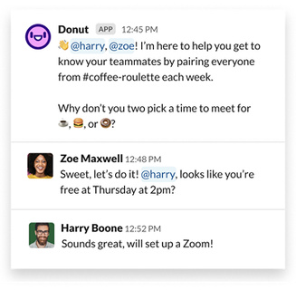 |
Seamless Slack integration Fully automated matching Scales for teams |
Feels robotic Repetitive if not personalized |
Watercooler Trivia 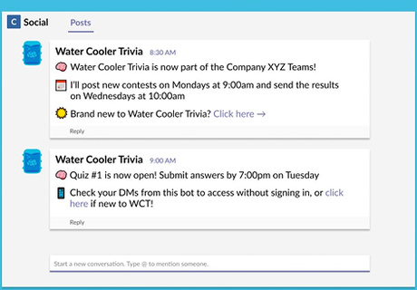 |
Fun and engaging Low effort to run |
Shallow connection May become distracting over time |
|
| Virtual Spatial Platforms | Gather 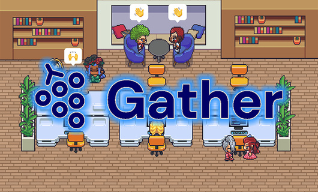 |
Spatial, playful interaction High sense of presence |
Requires onboarding Can feel game-like and distracting |
| Co-working Tools | Focusmate 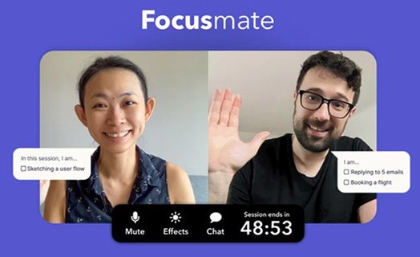 |
Promotes deep work Accountability-based |
Lacks social/casual interaction Meant for individual focus |
Existing tools approach casual interaction from different angles, such as automated matching, shared spaces, or structured activities, but few clearly communicate the reason behind a specific pairing or reduce the social pressure of starting the conversation. This insight shaped Coffee Chat's direction: combining intentional pairing with a low pressure experience, without requiring direct message coordination.
Design Goals
Designing intentional connections with minimal social pressure
Automated Pairing with Purpose
Match employees and clearly communicate the reason behind each pairing, helping users feel confident about joining.
Conversation Starters
Suggest engaging topics or icebreakers to help participants initiate conversations comfortably.
Smart Scheduling
Allow users to select preferred times and automatically schedule chats within available time slots.
Cross-Department Matching
Enable connections between employees from different teams to break down silos and foster networking.
Constraints
Launching a new feature ahead of the rebranding
The product was transitioning from a green-dominant identity to a modern blue-focused visual system, but the rebrand was still in progress. We had just two weeks to design and release the coffee chat feature. This pushed us to focus the MVP on enabling one meaningful chat per week.
Exploration · Challenge 1
Creating meaningful pairings
Users were more likely to accept a pairing when they understood why they were matched. I championed using the GPT-3 API to infer connections from lightweight signals (profiles, onboarding inputs, shared Slack channels) and generate a plain-language explanation for each match.
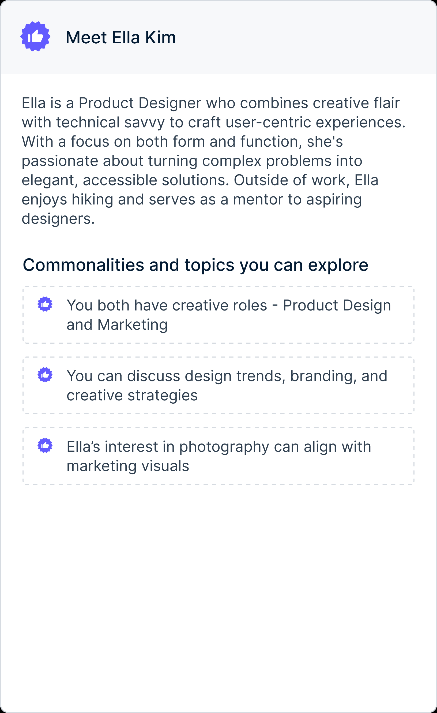
AI-generated intro
A warm profile summary grounded in each person's background, so users quickly understand who they're meeting beyond a static bio.
Explainable match
Transparent reasons for why the pairing was made, giving users confidence to accept instead of dismissing random matches.
Exploration · Challenge 2
Mapping the user flow
Existing tools rely on back-and-forth DMs that create friction and drop-offs. Coffee Chat removes messaging entirely, replacing it with default states, automated scheduling, and clear fallback paths.
Existing Coffee Chat Tool User Flow
Our Coffee Chat Flow
Iteration · Challenge 1
Simplifying coffee chat's interface
Faced with a complex UI, I initially designed a multi-functional widget. User testing revealed its high cognitive load, leading me to divide it into two simpler widgets for availability and reasons, which received more positive feedback during internal A/B testing.
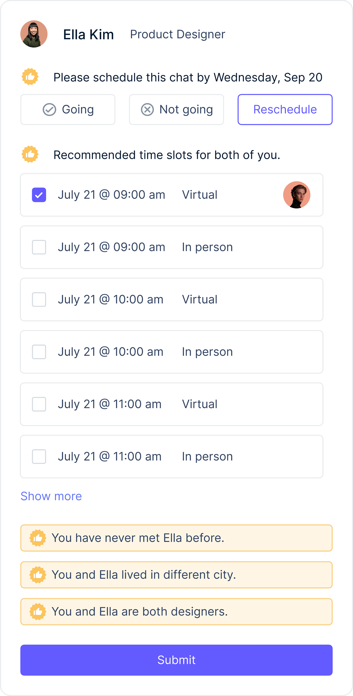
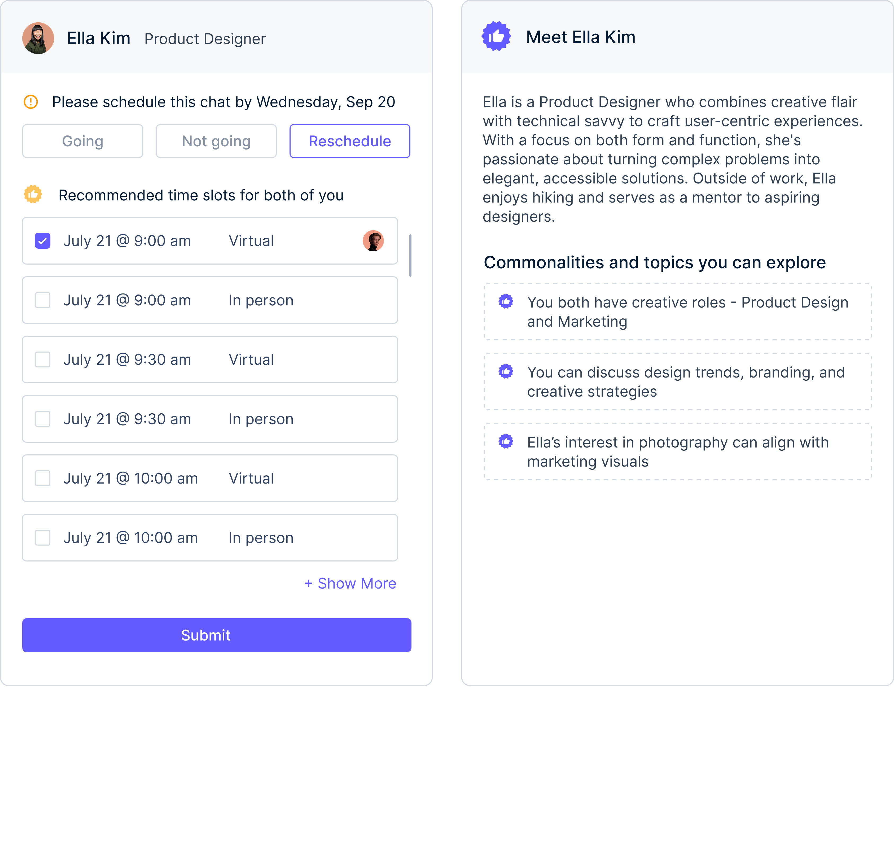
Iteration · Challenge 2
Optimizing meeting format selection
I explored letting users choose between virtual and in-person meetings, but A/B testing showed it caused delays and confusion. In-person meetings were rarely chosen in our remote and hybrid setting. We removed the selection to simplify scheduling and reduce cognitive load.
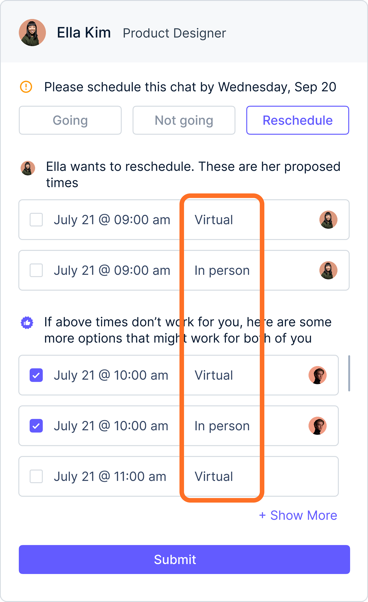
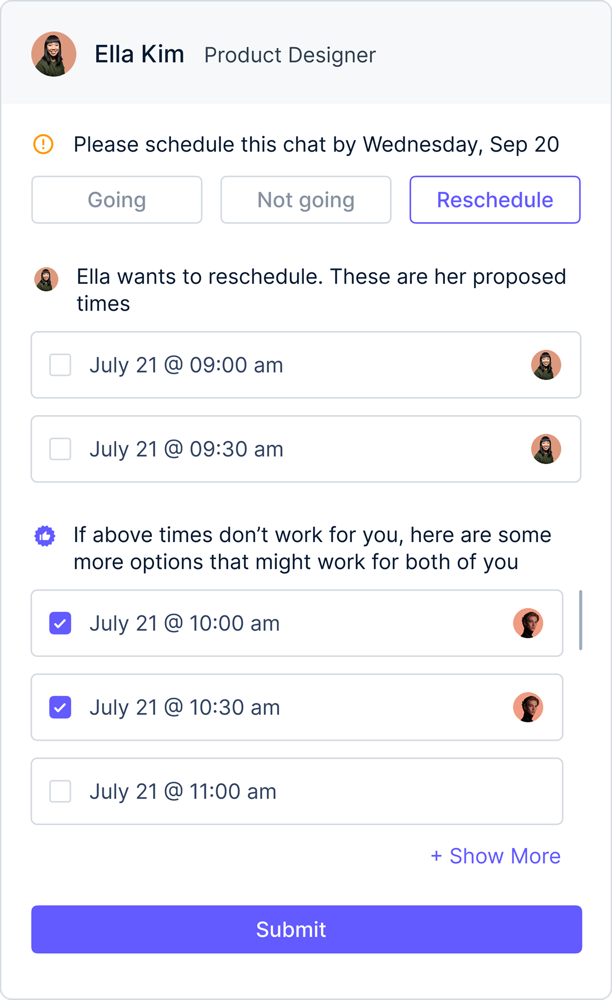
Final Deliverables
Seamless scheduling with contextual matchmaking
The Coffee Chat feature automatically pairs users each week based on their availability, integrating with Google Calendar. Matches include context on shared interests and suggested topics to facilitate conversation. The chat is set to "Going" by default, ensuring a seamless scheduling experience. Users can reschedule or decline if needed. Upon both users' confirmation, the system generates a Google Meet link and adds it to their calendar, making it easy to connect and engage in meaningful conversations.
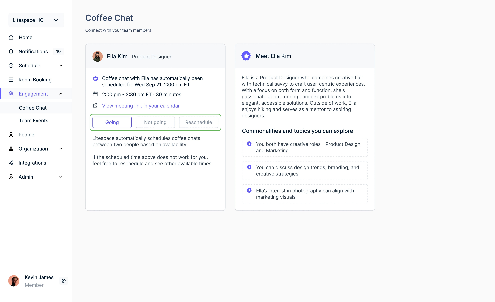
Handling chat declines without friction
If either participant declines, both users see a notification. The system does not require a reason for declining. Users are simply notified that their next coffee chat will be scheduled in the following cycle.
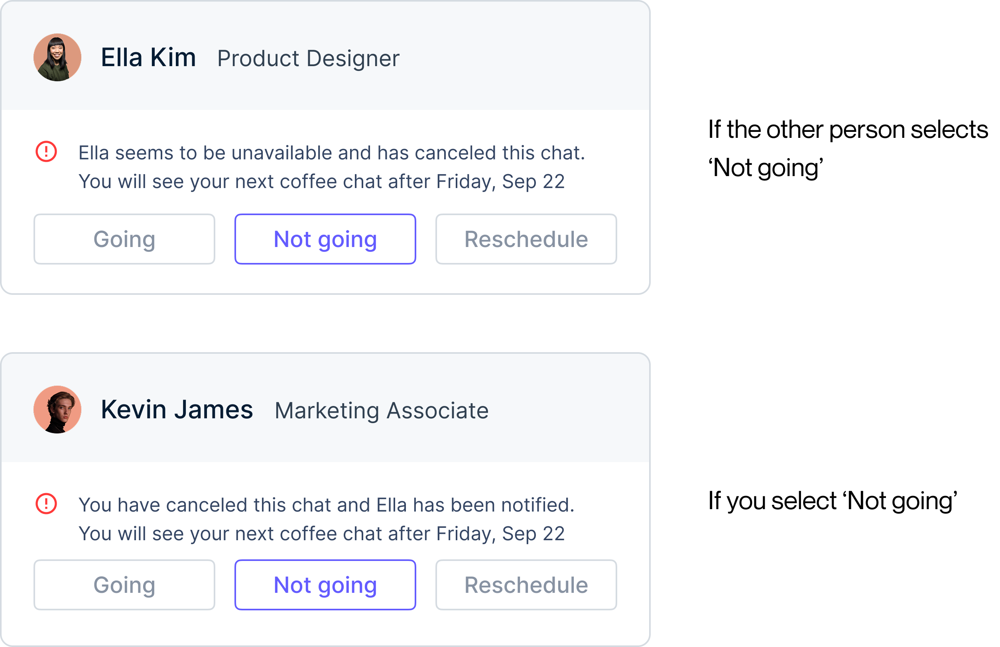
Flexible scheduling for better availability
If user wants to reschedule, he can choose from alternative time slots automatically recommended based on both users' availability. This simplifies the process by providing quick, pre-selected options, allowing for a smoother scheduling experience. Once both users agree on a new time, the chat is confirmed.
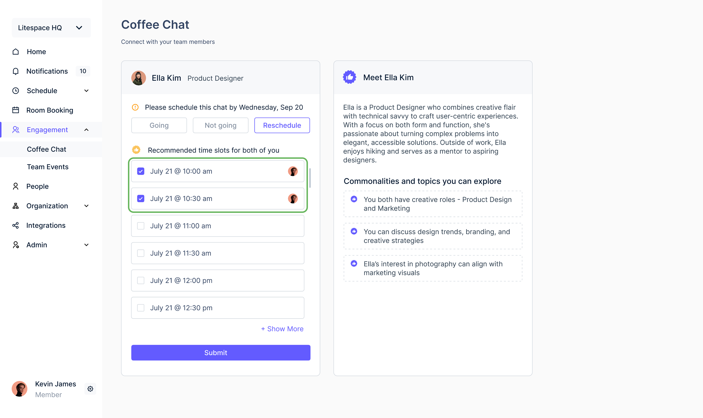
If the other user proposes new times, user can review and select a slot that works for both. This ensures flexibility while maintaining a structured approach, reducing the need for back-and-forth coordination and making it easier to finalize meetings.
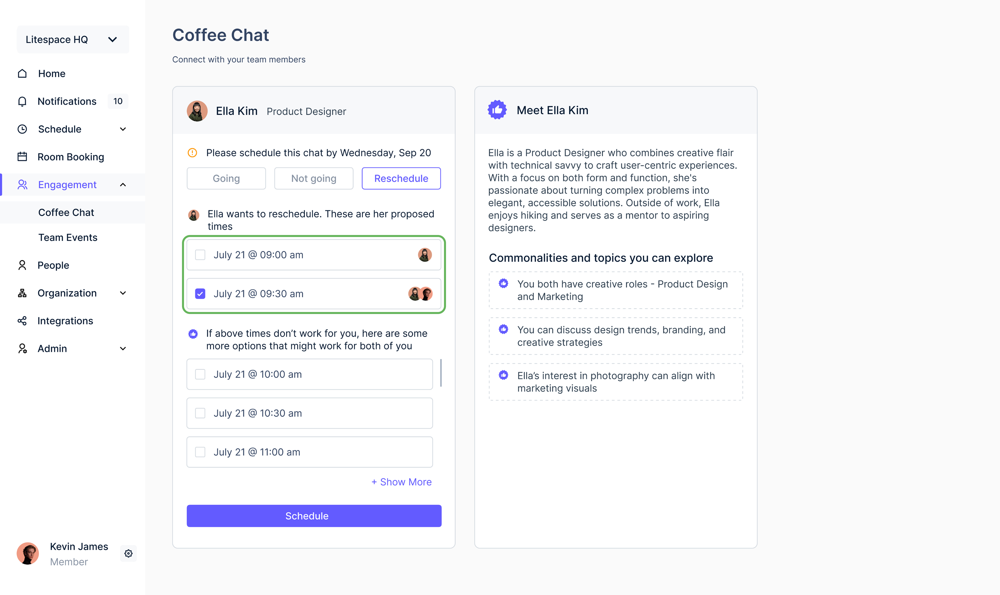
If none of the other user's suggested times work, users can propose their own availability for the other person to review. This flexible approach simplifies scheduling and increases the likelihood of finding a mutually agreeable time.
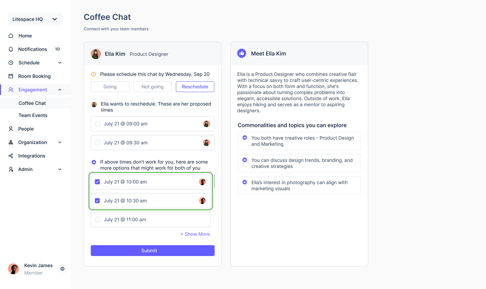
Design System
New identity design system
I collaborated with another designer to build the atomic foundations of the new identity design system, defining color tokens and typography. I also created molecule-level components that balanced consistency with flexibility for different product needs.

Reflection
What I learned
Designing Coffee Chat during the shift from a green-dominant identity to a modern blue-focused system taught me how to stay flexible while keeping the experience clear and lightweight. With only two weeks, I focused the MVP on one meaningful weekly pairing and removed anything that added friction. Working with early AI pairing logic gave me a deeper understanding of how contextual signals shape user trust.